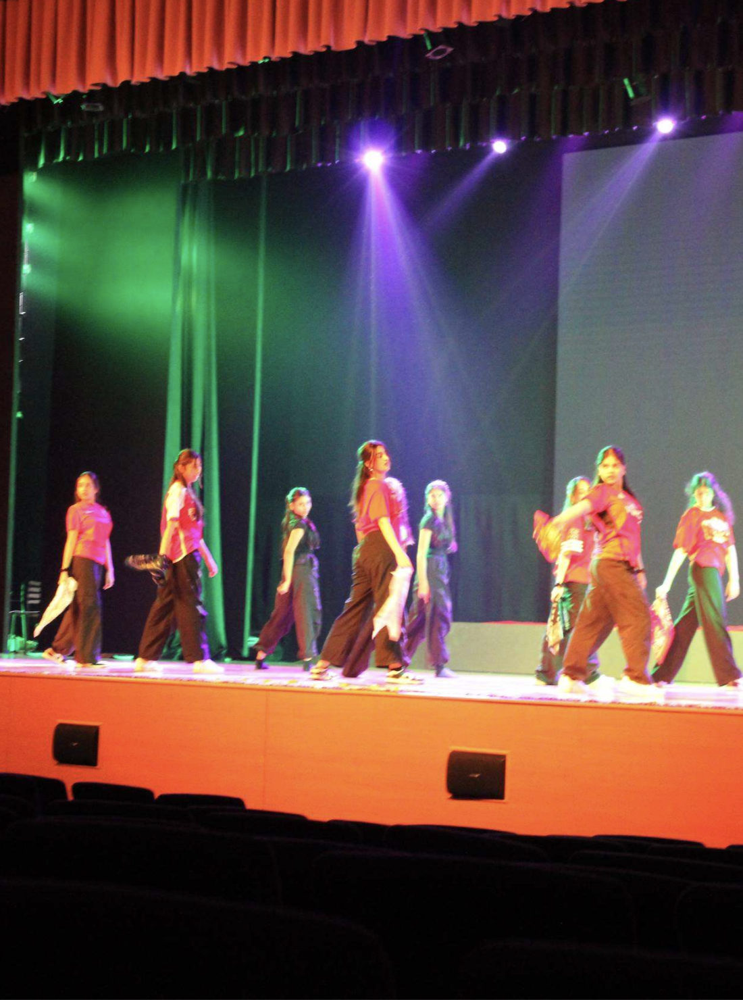

DANCE · FESTIVAL OF HOPE 2026
Global
Rhythms
A celebration of dance, culture and artistic expression through Indian Classical and Western dance.

GLOBAL RHYTHMS 2026
One World.
Many Rhythms.
Global Rhythms is an inter-school dance competition celebrating movement, culture, creativity, discipline and expression.
The competition includes Indian Classical Dance and Western Dance.
Western Dance may be presented as either a solo or a group performance.
All performances should connect to the event theme One World, Many Rhythms.
The overall Festival of Hope 2026 theme is Chrysalis.
SUB-VERTICALS
Three ways
to perform.
Indian Classical Dance - solo
Solo
One participant per school. Each participant performs solo.
Junior: Grades 6–8
Senior: Grades 9–12
Western Dance — Solo
Solo
One participant represents the school in a solo Western dance performance.
Junior: Grades 6–8
Senior: Grades 9–12
Western Dance — Group
Group
One team per school with 8–12 participants overall and a minimum of 5 dancers on stage at any given time.
Junior: Grades 6–8
Senior: Grades 9–12
FAIR & UNBIASED JUDGING
Dance on
your own merit.
To ensure fair and unbiased judging, participating schools will not be identified to the judges.
Each school will be assigned an anonymous team name or identifier for performances and results.
SUB-VERTICAL 01 · INDIAN CLASSICAL
Tradition,
discipline,
expression.
Team Composition
Only one participant per school is permitted to register. The participant must perform solo.
Dance Style
The performance must be based on an Indian classical dance form such as Bharatanatyam, Kathak, Odissi, Kuchipudi, Manipuri, Mohiniyattam, Kathakali or Sattriya.
Style Authenticity
Performances must strictly adhere to the chosen classical style.
Theme
Through Classical Dance, participants should showcase tradition, discipline and expression while reflecting the richness of Indian cultural heritage.
Performance Duration
Performances must be a minimum of 3 minutes and a maximum of 5 minutes. Exceeding the limit will result in a deduction of points.
Costumes
Costumes must be appropriate to the dance form and maintain cultural authenticity and decency.
Props
Props must be traditional and relevant to the dance form. Participants are responsible for setup and removal.
SUB-VERTICAL 02 · WESTERN DANCE
Find your
movement.
Performance Options
Western Dance may be presented as either a solo performance or a group performance.
Group Composition
A Western group team may consist of 8–12 participants overall, with a minimum of 5 dancers on stage at any given time. Students participating in western solo may not participate for western group and vice versa
Solo Composition
A Western solo performance is performed by one participant.
Dance Styles
Performances may be based on Jazz, Contemporary, Hip Hop, Afro Dance Style or Dancehall.
Style & Fusion
Teams and solo performers must remain coherent within the chosen Western dance style or an appropriate fusion of Western genres.
Theme
Performances should demonstrate creativity and innovation while maintaining coherence with the chosen dance style. Storytelling through movement is encouraged, while abstract interpretations are also acceptable.
Performance Duration
Each Western performance must be 3–5 minutes long, including entry, exit and introduction where applicable. Exceeding the time limit will result in a deduction of points.
Props
Western group teams may use a maximum of 2 props. Props must be relevant to the choreography and safe to use. Teams are responsible for setup and removal.
MUSIC & AUDIO
Keep every
track appropriate.
All music tracks must be submitted in MP3 format at least 48 hours before the competition.
Music tracks must be submitted to:
unnat.kaur@pathways.in
Tracks should follow the required naming format:
[School name – category – junior or senior division]
Music must be appropriate for the event. Foul, offensive or inappropriate language or content is not permitted.
Participants are responsible for the quality and clarity of their submitted music track.
CLASSICAL · 100 MARKS
How Classical
performances are judged.
Technique
Quality of execution, technical skill and control.
Abhinaya
Expression and communication through movement.
Costume & Presentation
Appropriate costume and overall presentation.
Traditional Approach
Adherence to the traditional form.
Overall Impact
Overall effectiveness of the performance.
WESTERN · 100 MARKS
How Western
performances are judged.
Theme & Creativity
Creativity and effectiveness in interpreting the theme.
Choreography & Technique
Quality of choreography, execution and technical skill.
Music & Rhythm
Musicality, rhythm and relationship between music and movement.
Expression & Energy
Energy, expression and stage presence.
Overall Impact
Overall effectiveness and impact of the performance.
CONDUCT & SAFETY
Perform
responsibly.
Professional Conduct
Participants are expected to display respect and professionalism throughout the event.
Misconduct
Misconduct, disrespect or unfair practices may result in disqualification.
Safe Performance
Performances must be safe and free from risky stunts or unsafe movements.
Responsibility
Participants and teams are responsible for the safety of their members and props.
Final Decisions
The decisions of the organising committee and judges are final and binding.
GLOBAL RHYTHMS 2026
Bring your
rhythm.
Step onto the stage and celebrate the many ways in which dance brings people together. Global Rhythms invites students to express culture, creativity and individuality through movement.
MYP 1–3 · MYP 4–5 · DP1–DP2
Bring together movement, music, storytelling and performance to create a memorable interpretation of One World, Many Rhythms.